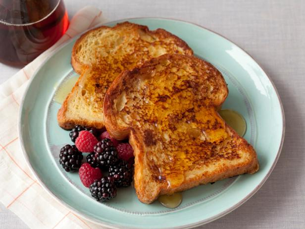

French Toast
Adapted from Alton Brown

Description
French toast is both a delicious breakfast and a great way to use up
bread that is about to go stale (or maybe already has). This recipe is
adapted from Alton Brown, as seen on the show Good Eats.
Ingredients
- 1 cup half and half
- 3 eggs
- 2 tablespoons honey
- 1/4 tablespoon kosher salt
- 8 half inch slices of day old bread
- 4 tablespoons butter
Steps
- combine half and half, eggs, honey, and salt into a bowl, whisk and
set aside
- heat 10-inch skillet to medium high and melt butter
- soak bread in custard for 30 seconds each side
- cook 2 slices of bread in skillet, flipping after 2 minutes
- bake in oven at 350F for 5 minutes, or leave as is for a more jammy
toast